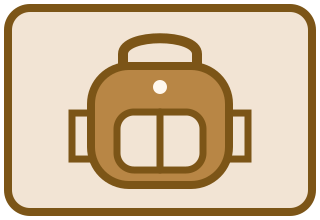
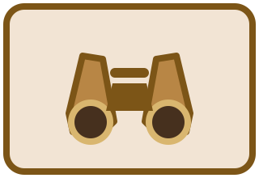
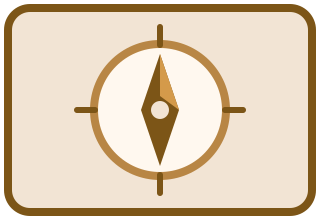
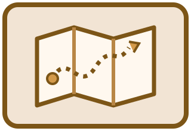
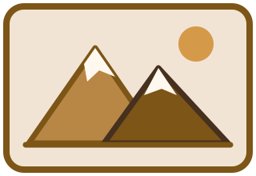

Cards
Meet the six pieces of kit in the Adventurous Meerkat's trail-card collection. Each illustrated card highlights an item that helps make an outing more comfortable, informed, or fun.

Trail Pack
Carry water, snacks, a light layer, and the small things you want close at hand.

Lookout Binoculars
Notice birds and distant details while giving wildlife plenty of space.

Trail Compass
A simple navigation backup belongs alongside a map and a charged phone.

Route Map
Know the route, distance, trail markers, and exit points before setting out.

Summit View
Choose a climb that fits the group and save time to enjoy the view.
Camp Shelter
For overnight adventures, follow campsite rules and keep food secured.